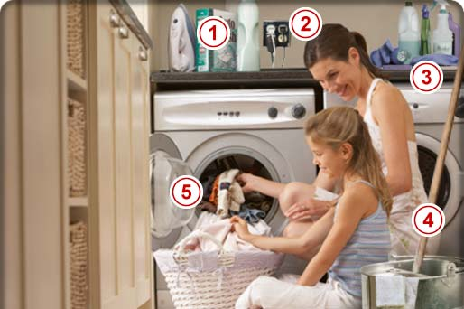

HomeHero At Hand for Peace of Mind™
My Home Safety
The Laundry and Utility Room
The Laundry room or utility room can be small, but don’t underestimate its potential fire hazards. Washers and dryers consume large amounts of electricity, therefore creating external heat. This can increase the risk of fire. Add to that a gas line for gas dryers and we have even more potential fire risks.
- Dryer maintenance
- Appliance tips
- Hot dryers
- Laundryroom storage
- Lint trap
- Have you considered...
- If your dryer is gas heated, the dryer and gas connection need to be inspected annually by a professional. Make sure there are no leaks. If your dryer is electric, you should periodically check the plug and wiring to see that everything is in good condition. Dryer connections are usually 220 volts and should only be serviced by a qualified electrician.
- Notice how many appliances are plugged into outlets and the condition of cords and plugs. Try not to use extension cords. If you use an iron in this area, be careful not to place a hot iron on or near anything flammable. Don’t leave a hot iron unattended, particularly around children.
- Hot dryers are a potential hazard that everyone in your household needs to be aware of. Keep clothes, cleaning products and other flammables off the surfaces of the dryer, and avoid leaving your dryer running when you leave the house.
- Be aware of what is stored in the laundry and utility room. We are reminded to read the labels on containers and products before storing them in heated areas. Do not store quantities of chemicals or buckets of water as they can add to an electrical or heat-related fire condition.
- Fire safety prevention suggests we should clean the lint trap with each load. Also, fire safety authorities reminds us to check the vent piping and clean if needed at least once a year to avoid a dangerous buildup of dust and lint.
- Dryer maintenance
- Appliance tips
- Hot dryers
- Laundryroom storage
- Lint trap
